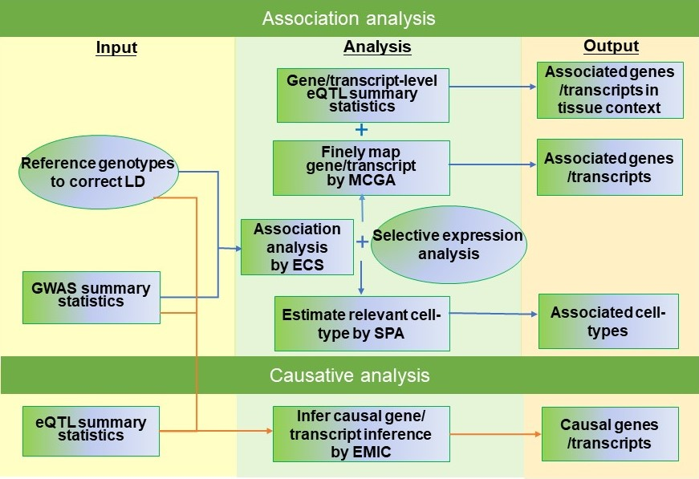

KGGSEE: A biological Knowledge-based mining platform for Genomic and Genetic association Summary statistics using gEne Expression
User manual 1.0
Miaoxin Li, Lin Jiang
Introduction¶
KGGSEE is a standalone Java tool for knowledge-based analyses of genomic and genetic association summary statistics of complex phenotypes by integrating gene expression and related data. It has four major integrative analyses, 1) gene-based association analysis, 2) estimation of phenotype-associated tissues or cell-type based on gene expression in single-cell or bulk cells of different tissues, 3) conditional gene-based association analysis based on multi-strategy, 4) causal gene inference for complex diseases and/or traits based-on multiple eQTL. More integrative analysis functions will be added into this analysis platform in the future.
Installation¶
kggsee.jar¶
The main library of KGGSEE, kggsee.jar, does not need an installation procedure as long as its Java Runtime Environment(JRE) v1.8 (or up) is pre-installed in your machine. The kggsee.jar can be directly executed given a file path
R packages¶
Note
However, you many need to install several R packages which will be called by kggsee.jar. The following are instructions for R package installation under the interactive working interface of R.
Rserve
install.packages(“Rserve”, dep=TRUE)More installation instruction can be found at https://www.dundas.com/support/support-center/support-articles/installation/install-and-configure-r.NNLM
install.packages(“NNLM”, dep=TRUE)More installation instruction can be found at https://github.com/linxihui/NNLM.MendelianRandomization
The first step is to install the PhenoScanner package(and the MendelianRandomization package if you haven't done this previously):
install.packages("devtools") library(devtools) install_github("phenoscanner/phenoscanner") library(phenoscanner) install.packages("MendelianRandomization") library(MendelianRandomization)
Resource data¶
Under the folder of kggsee, there is a folder named resources, which contains running resource data, e.g., gene boundary and gene expression. KGGSEE will automatically download required resource files. Users can all manually download the files and put them into the corresponding folders.
Tutorials¶
Gene-based association analysis¶
- Purpose: Detect associated genes of a phenotype by GWAS summary statistics
Input data:
GWAS summary statistics compressed in a text file(a fabled data set for education purpose): examples/gwas.sum.stat.gz
Genotypes in VCF format to approximate correction between summary statistics: resources/hg19/gty/1kg.phase3.v5.shapeit2.eur.hg19.chr1.vcf.gz
java -Xmx10g -jar kggsee.jar \
--nt 10 \
--gene-assoc \
--sum-file examples/gwas.sum.stat.gz \
--vcf-ref resources/hg19/gty/1kg.phase3.v5.shapeit2.eur.hg19.chr*.vcf.gz \
--keep-ref \
--out examples/out/geneAssoc
Estimate relevant cell-types of a phenotype¶
- Purpose: Estimate relevant cell-types of a phenotype and finely map associated genes according to selective expression
Input data:
GWAS summary statistics compressed in a text file(a fabled data set for education purpose): examples/gwas.sum.stat.gz
Genotypes in KGGSEE objects(generated last time) to approximate correction between summary statistics: examples/out/geneAssoc
Gene expression data compressed in a text file: resources/hs_scRNA_cluster_mean.tsv.gz
java -Xmx10g -jar kggsee.jar \
--nt 10 \
--spa \
--expression-file resources/hs_scRNA_cluster_mean.tsv.gz \
--only-hgnc-gene \
--sum-file examples/gwas.sum.stat.gz \
--saved-ref examples/out/geneAssoc \
--out examples/out/spa \
--excel
Multi-strategy conditional gene-based association analysis¶
Purpose: Perform conditional gene-based association analysis using different SNPs sets, i.e., physically nearby SNPs, isoQTLs and gene-level eQTLs. Three strategies correspond to three models, i.e., MCGA_Dist, MCGA_isoQTL and MCGA_eQTL.
MCGA_Dist input data:
GWAS summary statistics compressed in a text file (a fabled data set for education purpose): examples/gwas.sum.stat.gz;
Genotypes in KGGSEE objects (generated in Gene-based association analysis) to approximate correction between summary statistics: examples/out/geneAssoc;
Gene expression data compressed in a text file: resources/gtex.v8.gene.mean.tsv.gz.
java -Xmx20g \
-jar kggsee.jar \
--nt 10 \
--sum-file examples/gwas.sum.stat.gz \
--chrom-col CHR \
--pos-col BP \
--p-col P \
--gene-finemapping \
--saved-ref examples/out/geneAssoc \
--expression-file resources/gtex.v8.gene.mean.tsv.gz \
--filter-maf-le 0.02 \
--only-hgnc-gene \
--p-value-cutoff 0.05 \
--multiple-testing bonf \
--calc-selectivity \
--out examples/out/geneAssoceQTL
MCGA_isoQTL input data:
GWAS summary statistics compressed in a text file(a fabled data set for education purpose): examples/gwas.sum.stat.gz;
Genotypes in KGGSEE objects (generated in Gene-based association analysis) to approximate correction between summary statistics: examples/out/geneAssoc;
Isoform-level expression data compressed in a text file: resources/gtex.v8.transcript.mean.tsv.gz;
isoQTL summary statistics compressed in a text file: resources/hg19/eqtl/Brain-FrontalCortex_BA9_.transcript.maf05.p01.gz.eqtl.txt.gz.
java -Xmx20g \
-jar kggsee.jar \
--nt 10 \
--sum-file examples/gwas.sum.stat.gz \
--chrom-col CHR \
--pos-col BP \
--p-col P \
--gene-finemapping \
--saved-ref examples/out/geneAssoc \
--expression-file resources/gtex.v8.transcript.mean.tsv.gz \
--eqtl-file resources/hg19/eqtl/Brain-FrontalCortex_BA9_.transcript.maf05.p01.gz.eqtl.txt.gz \
--filter-eqtl-p 0.01 \
--filter-maf-le 0.02 \
--only-hgnc-gene \
--p-value-cutoff 0.05 \
--multiple-testing bonf \
--calc-selectivity \
--out examples/out/geneAssoceQTL
MCGA_eQTL input data:
GWAS summary statistics compressed in a text file(a fabled data set for education purpose): examples/gwas.sum.stat.gz;
Genotypes in KGGSEE objects (generated in Gene-based association analysis) to approximate correction between summary statistics: examples/out/geneAssoc;
Gene-level expression data compressed in a text file: resources/gtex.v8.gene.mean.tsv.gz;
eQTL summary statistics compressed in a text file: resources/hg19/eqtl/Brain-FrontalCortex_BA9_.gene.maf05.p01.gz.eqtl.txt.gz.
java -Xmx20g \
-jar kggsee.jar \
--nt 10 \
--chrom-col CHR \
--pos-col BP \
--p-col P \
--gene-finemapping \
--sum-file examples/gwas.sum.stat.gz \
--saved-ref examples/out/geneAssoc \
--expression-file resources/gtex.v8.gene.mean.tsv.gz \
--eqtl-file resources/hg19/eqtl/Brain-FrontalCortex_BA9_.gene.maf05.p01.gz.eqtl.txt.gz \
--filter-eqtl-p 0.01 \
--filter-maf-le 0.02 \
--only-hgnc-gene \
--p-value-cutoff 0.05 \
--multiple-testing bonf \
--calc-selectivity \
--out examples/out/geneAssoceQTL
Gene-based causality analysis¶
- Purpose: Detect causal genes of a phenotype by GWAS summary statistics and eQTL
Input data:
GWAS summary statistics compressed in a text file(a fabled data set for education purpose): examples/gwas.sum.stat.gz
Genotypes in KGGSEE objects(generated in last time) to approximate correction between summary statistics: examples/out/geneAssoc
eQTL summary statistics compressed in a text file: resources/hg19/eqtl/Brain-FrontalCortex_BA9_.transcript.maf05.p05.gz.eqtl.txt.gz
java -Xmx10g -jar kggsee.jar \
--nt 10 \
--emic \
--eqtl-file resources/hg19/eqtl/Brain-FrontalCortex_BA9_.transcript.maf05.p05.gz.eqtl.txt.gz \
--filter-maf-le 0.05 \
--sum-file examples/gwas.sum.stat.gz \
--beta-or y \
--saved-ref examples/out/geneAssoc \
--out examples/out/emic \
--excel
Functions¶
Gene-based association analysis by an effective chi-square statistics(ECS)¶
One can perform gene-based association analysis by an effective chi-square statistics(ECS) with GWAS p-values of variants. The p-values are converted to chi-square statistics(degree of freedom = 1). The ECS merges all chi-square statistics of a gene after correcting the redundancy of the statistics due to LD. The LD is calculated from genotypes of an ancestrally matched sample in VCF format, e.g. a panel of 1000 Genomes Project. The method of ECS is described in our paper(Paper Link).
Required options¶
--gene-assoc--sum-file [/path/to/summary/file]--vcf-ref [/path/to/vcf/file]--keep-ref[--saved-ref "previous/output/path/prefix"]--out [output/path/prefix]
See an analysis example at: Gene-based association analysis
Explanations and Optional options¶
--gene-assoc: The main function option.--sum-file: The file containing GWAS summary statistics.Three columns of the GWAS summary statistic file, chromosome, physical position and p-value are minimal requirement. The default column names are CHR, BP and P respectively. Otherwise, users should specify the name by
--chrom-col,--pos-coland--p-colrespectively.CHR
BP
P
1
751756
0.979957
1
752566
0.863844
1
752894
0.55814
1
753405
0.968401
1
755890
0.918246
--vcf-ref: The file containing genotypes to calculate genotypic correlations. For data separated in multiple files by chromosomes, one can use asterisk wildcard (e.g., hg19.chr*.vcf.gz) to denote the chromosome names.--keep-ref: Save the encoded genotypes in VCF for future usage, which will speed up next analysis.--saved-ref: Instead of using--vcf-ref, one can directly specify the path of encoded genotypes last time by specifying last output path.--filter-maf-le: Filter out variants with minor allele frequency less or equal than the specified value.--out: Specify the path and prefix name of the output files. The main output file of the gene-based analysis is *.gene.pvalue.txt or *.gene.pvalue.xls. The followingGene
#Var
ECSP
Chrom
Pos
VarP
Ingored
RefGene
GENCODE
RERE-AS1
21
7.83E-10
1
8490320
1.17E-10
0
…
…
RNU6-2
11
0.442684
1
10355834
0.146355
0
…
…
PTPRF
188
4.59E-11
1
44083015
4.09E-11
0
…
…
columns in the output file are gene symbol, number of variants in the gene, p-values of gene-based association test, and the detailed information of the top variant within the gene(i.e., the variant with smallest p-value). These columns include chromosome, physical position, p-value, whether the top variant was ignored in the gene-based association analysis, and gene feature annotations according to RefGene and GENCODE.
Finely map genes and estimate relevant cell-types of a phenotype by the single-cell(or bulk-cell) type and phenotype cross annotation framework(SPA)¶
One can simultaneously prioritize phenotype associated genes and cell-types with GWAS p-values and gene/transcript expression profile. The GWAS p-values types and expression were analyzed by an iterative prioritization procedure. In the procedure, phenotype-associated genes were prioritized by a conditional gene-based association(using the ECS again) according to the genes’ selective expression in disease related cell-types while the phenotype related cell-types were prioritized by an enrichment analysis of Wilcoxon rank-sum test for phenotype-associated genes’ selective expression. The phenotype-associated gene list and phenotype related cell-type list were updated by turns until the two list were unchanged. The detailed method is described in our paper(Paper Link).
Required options¶
--spa--expression-file [path/to/expression/file]--only-hgnc-gene--sum-file [/path/to/summary/file]--saved-ref [previous/output/path/prefix]--filter-maf-le 0.02--out [output/path/prefix]
See an analysis example at: Estimate relevant cell-types of a phenotype
Explanations and Optional options¶
--spa: The main function option.--multiple-testing: The multiple testing method to select significant genes for the conditional analysis. There are three settings. bonf: Standard Bonferroni correction given a family-wise error rate specified by--p-value-cutoff. benfdr: Benjamini-Hochberg method to control the false discovery rate. fixed: Filtering by a fixed p-value cutoff.--p-value-cutoff: The cutoff for the multiple testing.--only-hgnc-gene: Only consider genes with hgnc gene symbols.--expression-file: The path of gene expression file.The expression file contains gene symbols(the first column), expression mean and standard errors of the gene or transcript in a cell types or clusters. One can include the Ensembl transcript ID of a gene in the first column. When a gene has multiple transcripts, each row can only contain the data of transcript. The standard error is not pre-requisite.
Gene
Cell_cluster1
Cell_cluster1.SE
Cell_cluster2
Cell_cluster1.SE
…
PRPF19:ENST00000541371
2.5
0.234
12.5
0.564
…
PRPF19:ENST00000541391
3.2343
0.4638
10.23
0.58
…
C19orf47:ENST00000580977
9.2343
0.8638
1.23
0.548
…
…
…
…
…
…
…
--sum-file: See above description.--filter-maf-le: See above description.--out: Specify the path and prefix name of the output files. One of main output files is the conditional gene-based analysis results, named *.finemapping.gene.ecs.txt or *. finemapping.gene.ecs.xls. The followingGene
Chrom
StartPos
EndPos
#Var
Group
ECSP
CondiECSP
GeneScore
C1orf162
1
112011621
112025081
21
0
2.73E-04
2.73E-04
3443
LINC01703
1
226266440
226282822
33
0
2.09E-04
2.09E-04
233.1
…
…
…
…
…
…
…
…
…
columns in the output file are gene symbol, chromosome, transcription start position, transcription end position, number of variants in the gene, the LD group ID of genes, p-values of gene-based association test, p-values of conditional gene-based association test, and the selective expression score in enriched tissue or cell-types.
Another main output files is the selective expression enrichment analysis results at different tissues or cell types, named *.celltype.txt or *. celltype.xls. The following
TissueName
RobustRegressionZ
AveragedLog(p)
Kidney-Cortex
1.70E-03
2.765004628
Brain-Cortex
2.30E-02
1.639680865
Bladder
2.50E-02
1.597056329
Brain-Hippocampus
2.70E-02
1.561281239
Colon-Transverse
3.00E-02
1.527765274
…
…
…
columns in the output file are tissue or cell-type names, the p-value of enrichment according to the selective expression derived from the robust regression z-score, the logarithm of p-value.
Multi-strategy Conditional Gene-based Association framework (MCGA)¶
MCGA can be used to perform conditional gene-based association analysis using different SNPs sets, i.e., physically nearby SNPs, isoQTLs and gene-level eQTLs. The statistical method is the improved effective chi-square statistics(ECS). The pre-calculated cis-eQTLs/isoQTLs of gene-level and isoform(transcript)-level expression in 50 tissues or cell-types from GTEx(v8) have been integrated into KGGSEE resource (hg19 and hg38).
Required options¶
--gene-finemapping--eqtl-file [path/to/eQTL/file of genes or transcripts]--filter-eqtl-p--expression-file [path/to/expression/file]--calcu-selectivity--sum-file [/path/to/summary/file]--filter-maf-le--saved-ref [previous/output/path]--out [output/path/prefix]--nt--chrom-col--pos-col--p-col--only-hgnc-gene--p-value-cutoff--multiple-testing--regions-out
See analysis examples at: MCGA
Explanations and Optional options¶
--nt: CPU cores used for the analysis.--gene-finemapping: The main function option.--multiple-testing: The multiple testing method to select significant genes for the conditional analysis. There are three settings. bonf: Standard Bonferroni correction. benfdr: Benjamini-Hochberg method to control the false discovery rate. fixed: Filtering by a fixed p-value cutoff.--p-value-cutoff: The family-wise cutoff for the multiple testing..--only-hgnc-gene: Only consider genes with HGNC gene symbols.--expression-file: The preproceeded gene expression file. The index column of the preprocessed expression file was gene/isoform symbol name, and each of 50 tissues or cell types had two columns: one representing average expression value (i.e., mean) of all sample and the other representing the standard error of the mean (SE).--calcu-selectivity: Calculate selective expression of a gene or transcripts in a tissue or a cell type.--filter-eqtl-p: a filter used to filter eQTLs/isoQTLs < the cutoff.--sum-file: the full path of the GWAS summary statistics. Three columns of the GWAS summary statistic file, chromosome, physical position and p-value are minimal requirement. The default column names are CHR, BP and P respectively. Otherwise, users should specify the name by--chrom-col,--pos-coland--p-colrespectively.--filter-maf-le: a filer used to filter variants with MAF > the cutoff.--regions-out: a region used to exclude variants in the specified regions.--eqtl-file: The full path of eQTL/isoQTL file. The format of eQTL/isoQTL file is similar to the fasta file. The first row starting with "#" is the column names. The eQTL data of a gene or transcript start with the symbol “>”. In the same row, the gene symbol, Ensembl gene/transcript ID and chromosome name are included and delimited by tab characters. The subsequent row contains the summary statistics the eQTL/isoQTL for the gene or transcript. The tab-delimited columns are physical position, reference allele, alternative allele, frequency of alternative allele, estimated effect size, standard error of the estimation, p-value, effective sample sizes and determination coefficient in a linear regression respectively. In the regression, the number of alternative alleles is used as an independent variable. On KGGSEE, we have pre-calculated the eQTL and isoQTL data using GTEx data(v8). Variants within 1MB upstream and downstream of a gene or a transcript boundary are included. The commands to compute eQTLs/isoQTLs can be seen in Compute the eQTLs and isoQTLs of each tissue.An example of eQTLs file is as follows:
#symbol id chr pos ref alt altfreq beta se p neff r2 >WASH7P ENSG00000227232 1 52238 T G 0.942 -1.771 0.285 5.16E-10 65 0.38 74681 G T 0.95 -1.457 0.333 1.19E-5 63 0.239 92638 A T 0.241 0.547 0.206 7.93E-3 53 0.121 >MIR1302-10 ENSG00000284557 1 52238 T G 0.942 -1.771 0.285 5.16E-10 65 0.38 74681 G T 0.95 -1.457 0.333 1.19E-5 63 0.239 … … … … … … … … …
An example of isoQTLs file is as follows:
#symbol id chr pos ref alt altfreq beta se p neff r2 >DDX11L1 ENST000456328 1 13418 G A 0.161 -0.03 0.013 0.027 62 0.076 19391 G A 0.11 0.065 0.027 0.017 63 0.085 107970 G A 0.285 -0.024 0.01 0.018 86 0.063 >MIR6859 ENST0000612080 1 13418 G A 0.161 -0.03 0.013 0.027 62 0.076 19391 G A 0.11 0.065 0.027 0.017 63 0.085 62578 G A 0.081 0.062 0.024 7.98E-03 67 0.098 99334 A G 0.088 0.071 0.035 0.043 56 0.07 … … … … … … … … …
--out: Specify the path and prefix name of the output files.- For MCGA_Dist, the three output files are as follows:
First one is the conditional gene-based analysis results, named *.finemapping.gene.ecs.txt or *.finemapping.gene.ecs.xls (We got the susceptible genes based on this file). The second is the gene-based association result file, named *.gene.pvalue.txt or *.gene.pvalue.xls. The third is the p-value of all variants belonging to a genes, named *.gene.var.pvalue.txt.gz. Their file formats are the same as above.
The following columns in the output file are gene symbol, number of variants in the gene, chromosome, , the position of top variant, the p-value, coefficient and standard error of the variant for gene expression as an eQTL.
Gene
#Var
ECSP
Chrom
Pos
VarP
RNU6-1199P
1
0.9428
1
693731
0.9428
FAM87B
22
0.342697746
1
754105
0.1067
LINC01128
53
0.351123025
1
783071
0.04703
LINC00115
14
0.556109469
1
761881
0.1923
FAM41C
23
0.926282946
1
812670
0.3068
TUBB8P11
11
0.882103279
1
812670
0.3068
Gene : gene name;
#Var : the number of variants assigned to the gene according to different strategies (physically nearby SNPs for MCGA_Dist, isoQTLs for MCGA_isoQTL and gene-level eQTLs for MCGA_eQTL);
ECSP : the p value of effective chi-square test;
Chrom : chromosome position of the gene;
Pos : the position of top variant belonging to the gene;
VarP: the p-value of top variant in GWAS summary statistics.
Gene
Chrom
StartPos
EndPos
#Var
Group
ECSP
CondiECSP
GeneScore
PLCH2
1
2394074
2441392
112
0
1.05E-06
1.16E-04
2304.327881
PLEKHG5
1
6521170
6584657
147
0
1.27E-06
0.003892706
2036.35083
NOL9
1
6577765
6619354
115
0
2.75E-08
1
606.8980103
KLHL21
1
6645867
6679456
44
0
5.52E-07
0.040296863
581.3381958
DNAJC11
1
6689319
6766960
146
0
1.37E-06
0.395464903
638.5668945
StartPos: gene start position;
EndPos:gene end position;
CondiECSP:the p value of gene by performing the conditional effective chi-square test;
GeneScore: the tissue selective score of the gene by the end of the iterative procedure;
Group: the identifier of LD block which the gene belong to.
Gene
#Var
ECSP
Chrom
Pos
VarP
RNU6-1199P
1
0.9428
1
693731
0.9428
FAM87B
22
0.342697746
1
754105
0.1067
FAM87B
22
0.342697746
1
754629
0.1202
FAM87B
22
0.342697746
1
754211
0.1236
FAM87B
22
0.342697746
1
754063
0.1486
FAM87B
22
0.342697746
1
752478
0.2151
The meaning of the column names in *.gene.var.pvalue.txt.gz is same as that in *.gene.pvalue.txt.
For MCGA_eQTL, the three output files are as follows:
Gene
#Var
ECSP
Chrom
Pos
GWAS_Var_P
OR4G4P
2
0.836453248
1
921071
0.5559
LINC00115
45
0.553784408
1
1453921
0.04947
CPTP
17
0.002951945
1
1838374
6.45E-04
ANKRD65
64
0.392843939
1
1293343
0.04382
LINC01770
81
0.030888201
1
2110848
0.005738
FAM87B
70
0.733937073
1
721290
0.1215
GWAS_Var_P : the p-value of top variant in GWAS summary statistics.
Gene
Chrom
StartPos
EndPos
#Var
Group
ECSP
CondiECSP
GeneScore
ATAD3C
1
845635
2404321
68
0
1.64E-07
1.64E-07
0.739010096
MIB2
1
851204
2372321
48
0
1.39E-07
0.01368601
0.184869051
SLC35E2A
1
1103150
2368706
61
0
1.38E-06
9.02E-04
NaN
CALML6
1
1112982
2401364
53
0
4.18E-07
1.41E-05
0.357095003
RER1
1
1429996
3207780
21
0
1.81E-07
1
0.005418475
The meaning of the column names in *.finemapping.gene.ecs.txt is same as that of MCGA_Dist.
Gene
#Var
ECSP
Chrom
Pos
GWAS_Var_P
OR4G4P
2
0.836453248
1
921071
0.5559
OR4G4P
2
0.836453248
1
705882
0.9933
LINC00115
45
0.553784408
1
1453921
0.04947
LINC00115
45
0.553784408
1
721290
0.1215
LINC00115
45
0.553784408
1
715265
0.1429
LINC00115
45
0.553784408
1
715367
0.1632
The meaning of the column names in *.gene.var.pvalue.txt.gz is same as that of MCGA_Dist.
For MCGA_isoQTL, the three output files are as follows:
Gene
#Var
ECSP
Chrom
Pos
GWAS_Var_P
eQTL_P
eQTL_Beta
eQTL_SE
LINC00115:ENST00000473798
38
0.6399446659796347
1
1453921
0.04947
0.00661
0.494
0.182
HES4:ENST00000484667
53
0.06254437207363488
1
1888193
0.007353
0.00874
0.424
0.162
ANKRD65:ENST00000537107
71
0.042331217566648344
1
1829424
7.524E-4
0.00428
-0.496
0.174
NADK:ENST00000378625
40
2.5509647239920406E-9
1
2373168
7.195E-12
0.00453
-0.389
0.137
LINC01770:ENST00000434150
66
1.0
1
1966453
0.02534
0.00388
0.765
0.265
DVL1:ENST00000378888
62
0.010190210501401314
1
1874581
1.972E-5
0.00667
0.499
0.184
Gene : gene:isoform pair name;
eQTL_P: p value of the top variant associated with gene;
eQTL_Beta : beta value of the top variant associated with gene;
eQTL_SE : se value of the top variant associated with gene.
Gene
Chrom
StartPos
EndPos
#Var
Group
ECSP
CondiECSP
GeneScore
NADK:ENST00000378625
1
715265
2505713
40
0
2.5509647239920406E-9
0.49001916558591097
0.4121204912662506
MIB2:ENST00000505820
1
715265
2554120
12
0
1.0281497357792791E-7
0.05404762888412341
0.24913454055786133
ATAD3C:ENST00000484537
1
797281
2403854
13
0
6.281932027672856E-7
1.0
0.7975806593894958
CFAP74:ENST00000412120
1
924368
2875906
65
0
1.385295185307669E-6
1.385295185307669E-6
0.817357063293457
PRKCZ-AS1:ENST00000333854
1
1130660
3011558
37
0
1.942873144890924E-8
2.584870685504903E-4
0.4307031035423279
MORN1:ENST00000606372
1
1346972
3319777
71
0
8.877373532310207E-7
0.04914216330168187
0.5989813208580017
The meaning of the column names in *.finemapping.gene.ecs.txt is same as that of MCGA_Dist.
Gene
#Var
ECSP
Chrom
Pos
GWAS_Var_P
eQTL_P
eQTL_Beta
eQTL_SE
LINC00115:ENST00000473798
38
0.6399446659796347
1
1453921
0.04947
0.00661
0.494
0.182
LINC00115:ENST00000473798
38
0.6399446659796347
1
721290
0.1215
0.00174
1.049
0.335
LINC00115:ENST00000473798
38
0.6399446659796347
1
715265
0.1429
0.00174
1.049
0.335
LINC00115:ENST00000473798
38
0.6399446659796347
1
715367
0.1632
0.00174
1.049
0.335
LINC00115:ENST00000473798
38
0.6399446659796347
1
726794
0.1814
0.00263
1.012
0.337
LINC00115:ENST00000473798
38
0.6399446659796347
1
1425816
0.3526
0.00138
0.84
0.262
The meaning of the column names in *.gene.var.pvalue.txt.gz is same as that of MCGA_Dist.
Infer causal genes based on GWAS summary statistics and eQTLs by Mendelian randomization analysis framework for causal gene estimation(EMIC)¶
One can perform multiple IVs based MR analysis to infer casual gene or transcript by an integrative framework named EMIC. EMIC adopted two multiple IVs based MR methods for causality test and casual effect estimation of a gene’s expression to a phenotype, median-based MR and ML-based MR. EMIC needs two major inputs, GWAS and eQTL summary statistics respectively. The GWAS summary statistics refer to the logarithm of odds ratio or regression coefficients and the corresponding standard errors(SEs) from a large-scale GWAS study, indicating the association between IVs and a phenotype. The eQTL summary statistics are similar to that of the GWAS, indicating association between IVs and expression of genes or transcripts in a tissue or cell type. EMIC has integrated the pre-calculated cis-eQTLs in 55 tissues or cell-types with gene-level and transcript-level expression from GTEx(version 8).
Required options¶
--emic--eqtl-file [path/to/eQTL/file of genes or transcripts]--sum-file [/path/to/summary/file]--beta-or [y/n]--saved-ref [previous/output/path]--out [output/path/prefix]
See an analysis example at: Gene-based causality analysis
Explanations and Optional options¶
--emic: The main function option.--eqtl-file: See above description.--sum-file: See above description.--beta-or: Indicate whether the coefficients(i.e., betas) in the summary statistics file are conventional odds ratios. If yes, KGGSee will automatically transform the betas and SEs by the natural logarithm.--saved-ref: See above description.--out: Specify the path and prefix name of the output files. The main output file is the Mendelian randomization analysis results for causal gene estimation, named *.mr.gene.txt or *. gene.mr.gene.xls. The followingGene
#Var
minP_MedianMR
DetailsMedianMR
minP_MLMR
DetailsMLMR
Chrom
Pos
GWAS_Var_P
GWAS_Var_Beta
GWAS_Var_SE
eQTL_P
eQTL_Beta
eQTL_SE
AMPD1
3
.
ENST00000639274[2,NaN,NaN,NaN]
9.38E-06
ENST00000639274[2,-0.07947323864224412,0.017935971853054997,9.382262412244995E-6]
1
115309590
8.83E-08
1.057384
0.0104
4.65E-05
-0.613
0.151
RN7SL432P
3
.
ENST00000484057[2,NaN,NaN,NaN]
9.38E-06
ENST00000484057[2,-0.07947323864224412,0.017935971853054997,9.382262412244995E-6]
1
115309590
8.83E-08
1.057384
0.0104
4.65E-05
-0.613
0.151
…
…
…
…
…
…
…
…
…
…
…
…
…
…
columns in the output file are gene symbol, number of variants in the gene, p-values of causality tests by Median-based MR, detailed causality estimation by Median-based MR, p-values of causality tests by maximal likelihood-based MR, detailed causality estimation by maximal likelihood-based MR, chromosome, top GWAS variant position, p-value, beta and SE of the top GWAS variant, p-value, beta and SE of the top GWAS variant as an eQTL. When a gene has multiple transcripts, the detailed MR results will show MR analysis of all transcripts. Each MR analysis result has four components, the number IVs for the estimation, the estimated causal effect, the standard error of the estimation, and the p-values.
Compute the eQTLs and isoQTLs of each tissue¶
Purpose: compute the eQTLs and isoQTLs based on the gene-level expression and isoform-level expression profiles of target tissue.
Input data:
Genotypes in KGGSEE objects(generated in Gene-based association analysis). Here genotypes in GTEx v8 were used as example input. When computing the eQTLs/isoQTLs of certain tissue, only subjects simultaneously containg genotype data and expression data were used;
Gene expression data of certain tissues corresponding to genotype data from the same subject.
java -Xmx10g \ -jar kggsee.jar \ --nt 10 \ --calc-eqtl \ --expression-gty-vcf path/to/vcf/file/of/subjects/with/expression --gene-expression resources/Adipose-Subcutaneous.expression.subjectid.gene.fmt.gz \ --filter-eqtl-p 0.01 \ --hwe-all 0.001 \ --filter-maf-le 0.05 \ --neargene 1000000 \ --out /path/Adipose-Subcutaneous.gene.maf05.p01 \
Details of the options can be seen in Options Index.
Estimate the potential driver tissues of a complex phenotype¶
Purpose: Estimate the potential driver tissues by selective expression of genes associated with complex phenotypes.
Input data:
GWAS summary statistics compressed in a text file (a fabled data set for education purpose): examples/gwas.sum.stat.gz;
Genotypes in KGGSEE objects (generated in Gene-based association analysis) to approximate correction between summary statistics: examples/out/geneAssoc;
Gene expression data compressed in a text file: resources/gtex.v8.gene.mean.tsv.gz.
java -Xmx10g \ -jar kggsee.jar \ --nt 10 \ --sum-file examples/gwas.sum.stat.gz \ --chrom-col CHR --pos-col BP --p-col P --gene-finemapping --saved-ref examples/out/geneAssoc \ --out examples/out/geneAssoceQTL \ --filter-maf-le 0.02 \ --only-hgnc-gene \ --p-value-cutoff 0.05 \ --multiple-testing bonf \ --calc-selectivity \ --expression-file resources/gtex.v8.gene.mean.tsv.gz
Details of the options can be seen in Options Index.
Options Index¶
Inputs/outputs¶
Option
Description
Examples with default value
--a1-col
column name of alternative or minor allele
--a1-col A1
--a2-col
column name of reference or major allele
--a2-col A2
--beta-col
column name of coefficients
--beta-col OR
--beta-or
whether the coefficients are odds ratio
--beta-or y
--chrom-col
column name of chromosome ID
--chrom-col CHR
--eqtl-file
path of eQTL file
--eqtl-file /path/to/eqtl_file
--excel
Output results in Excel format
--expression-gty-vcf
path to vcf file of subjects with expression
--expression-gty-vcf /path/to/vcf_file
--gene-expression
path to file with gene expression
--gene-expression /path/to/gene_expression_file
--freq-a1-col
column name of frequencies of A1 allele
--freq-a1-col FRQ_U
--keep-ref
save the encoded genotypes in VCF for future usage
--nmiss-col
column name of sample size with non-missing genotypes
--nmiss-col Neff
--out
output path and prefix name
--out ./test/test1
--pos-col
column name of positions
--pos-col BP
--p-col
column name of p-values
--p-col P
--saved-ref
the path of encoded genotypes by last time
--saved-ref 、test/test1
--se-col
column name of standard errors of the coefficients
--se-col SE
--sum-file
path of the file storing GWAS summary statistics
--sum-ref /path/to/gwas_summary_file
--vcf-ref
the path of vcf file and name
--vcf-ref /path/to/vcf_file/hg19.chr*.vcf.gz
Quality control¶
Option
Description
Examples with default value
--filter-eqtl-p
filter eQTLs with p-value > the cutoff
--filter-eqtl-p 1E-2
--filter-maf-le
filer variants with MAF ≤ the cutoff
--filter-maf-le 0.02
--hwe-all
filter variants with HWD test p-value < the cutoff
--filter-eqtl-p 1E-5
--only-hgnc-gene
only consider genes with HGNC gene symbols
--neargene
set the extension window size of a gene to cover more potential regulatory variants.
--neargene 5000
--regions-out
exclude variants in the specified regions
Functions¶
Option
Description
Examples with default value
--gene-assoc
perform gene-based association analysis
--macg
perform Mendelian randomization analysis for causal gene estimation
--spa
perform single cell type and phenotype association analysis
--calcu-selectivity
calculate selective expression of gene or transcripts in a tissue or a cell type
--ld-pruning-mr
prune a variant with genotypic correlation to another variant> the cutoff for causal gene estimation by MR
--ld-pruning-mr 0.5
--multiple-testing [bonf/benfdr/ fixed]
the multiple testing method used to select significant genes for the conditional gene-based analysis. There are three settings. bonf: Standard Bonferroni correction given a family-wise error rate specified by --p-value-cutoff. benfdr: Benjamini-Hochberg method to control the false discovery rate. fixed: Filtering by a fixed p-value cutoff.
--multiple-testing bonf
--p-value-cutoff
the family-wise cutoff for the multiple testing.
--p-value-cutoff 0.05
--top-gene
only select the N top significant genes for subsequent gene-based conditional analysis by ECS
--top-gene N
Utilities¶
Option
Description
Examples with default value
--nt
CPU cores for the analysis
--nt 12
--buildver
reference genome version of the coordinates. The supported versions are hg19 and hg38.
--buildver hg19
--resource
the path and folder of kggsee.